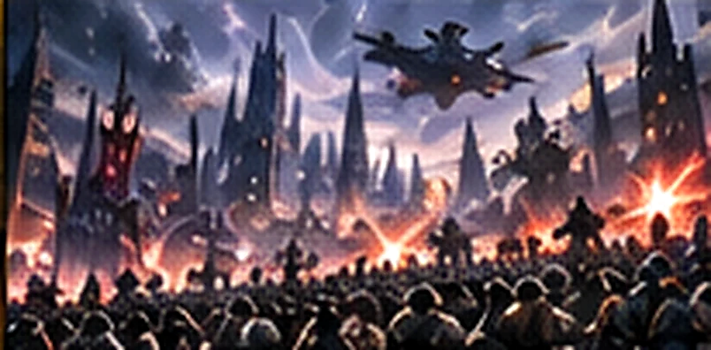
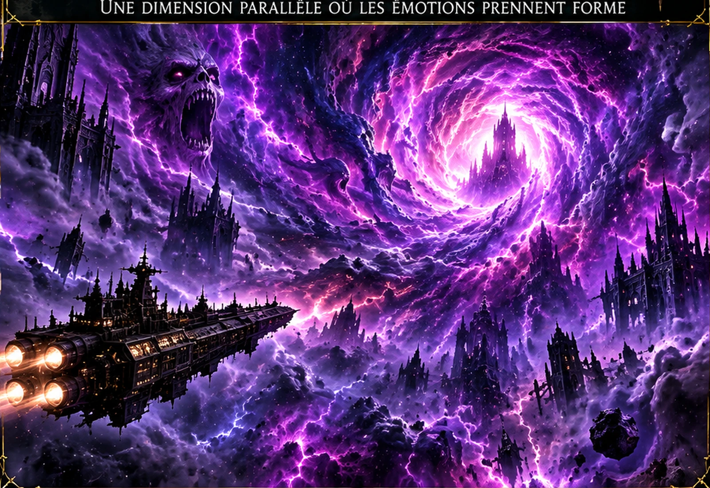
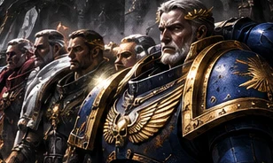
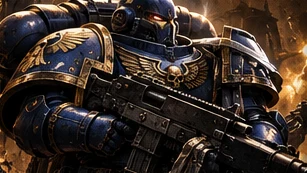
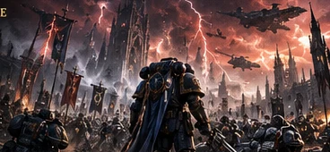
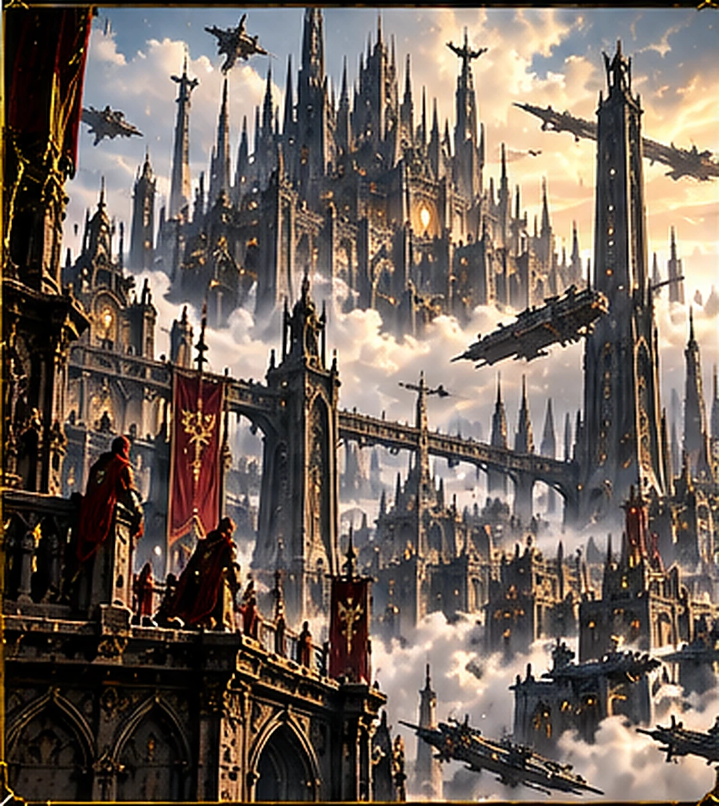
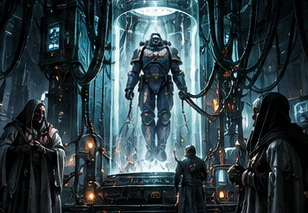
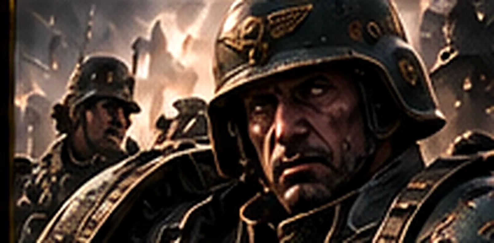

L’ÈRE INDOMITUS
Après la chute de Cadia, la Grande Faille déchire l’Humanité. Découvrez en huit chapitres les événements qui façonnent l’univers actuel de Warhammer 40,000.
La chute de Cadia
Le jour où la galaxie bascula

Pendant des millénaires, Cadia a constitué l’un des principaux remparts impériaux face à l’Œil de la Terreur. Sa position près d’un passage stratégique en faisait une forteresse essentielle pour contenir les armées du Chaos. Les régiments cadiens ont acquis une réputation légendaire de discipline et de résistance.
Lors de la Treizième Croisade Noire, Abaddon le Fléau lance une offensive destinée à briser ce verrou. La défense mobilise des soldats, des Space Marines et de nombreux alliés. Malgré une résistance acharnée, la planète est finalement détruite, notamment après la chute d’une Forteresse Noire sur sa surface.
La disparition de Cadia ne signifie pas la fin des Cadiens : des survivants continuent à servir l’Imperium. Mais elle accompagne une catastrophe bien plus vaste, qui bouleverse les équilibres de la galaxie et ouvre une nouvelle époque de conflits.
La Grande Faille
Une galaxie coupée en deux

La Cicatrix Maledictum, ou Grande Faille, est une immense déchirure du Warp qui traverse la galaxie. Son apparition provoque des tempêtes, des perturbations psychiques et des incursions démoniaques. Les routes spatiales sur lesquelles repose l’Imperium deviennent soudain bien plus dangereuses.
L’Empire de l’Humanité se retrouve divisé entre l’Imperium Sanctus, du côté où l’Astronomican demeure plus facilement perceptible, et l’Imperium Nihilus, plongé dans une obscurité stratégique. Les messages astropathiques se perdent et des mondes entiers cessent de recevoir des nouvelles de Terra.
La Faille transforme les guerres locales en crises de survie. Même un monde disposant de soldats et de ressources peut être condamné s’il ne reçoit plus de renforts, de nourriture ou d’informations sur les menaces qui approchent.
Le retour de Roboute Guilliman
Un Primarque face à dix mille ans de déclin

Roboute Guilliman, Primarque des Ultramarines, avait été maintenu en stase pendant des millénaires après avoir subi une blessure presque fatale. À l’heure où l’Imperium semble vaciller, il revient grâce aux efforts de Belisarius Cawl, des Ynnari et d’autres alliés.
Le monde qu’il découvre n’a plus grand-chose à voir avec l’idéal de la Grande Croisade. Le culte de l’Empereur domine la société, la bureaucratie ralentit les décisions et les institutions rivalisent pour conserver leur pouvoir. Guilliman devient un dirigeant majeur de l’Imperium et tente de restaurer son efficacité.
Son retour représente un immense espoir, mais aussi un choc politique. Un Primarque peut gagner des batailles et imposer des réformes ; il ne peut pas, à lui seul, résoudre dix mille ans de déclin.
Les Space Marines Primaris
Une nouvelle génération de guerriers

Belisarius Cawl dévoile les Space Marines Primaris, issus d’un programme de recherches et de préparation extrêmement long. Ces guerriers disposent de modifications biologiques supplémentaires ainsi que de nouveaux équipements, armures et armes.
Leur déploiement permet de renforcer des chapitres existants et d’en créer de nouveaux. Pour les forces impériales, cette arrivée représente une réserve de combattants d’élite au moment où les pertes et les invasions se multiplient.
Pourtant, l’intégration n’est pas toujours simple. Les traditions des chapitres, la méfiance envers les innovations et les différences entre générations peuvent susciter des tensions. Les Primaris deviennent progressivement une partie essentielle des forces de l’Adeptus Astartes.
La Croisade Indomitus
Reconquérir une galaxie en flammes

Pour empêcher l’effondrement impérial, Guilliman lance la Croisade Indomitus : une mobilisation gigantesque de flottes, de régiments, de Space Marines et de ressources venues de nombreux mondes. Son objectif est de secourir les systèmes isolés, rétablir des routes et repousser les ennemis de l’Humanité.
La croisade ne se résume pas à une bataille ni à un trajet linéaire. Elle rassemble de nombreuses campagnes menées sur des fronts différents, parfois sans communication fiable. Chaque victoire peut rouvrir une route vitale, mais chaque détour laisse d’autres planètes exposées.
Les nouveaux Space Marines Primaris jouent un rôle important dans cet effort, aux côtés de la Marine impériale, de l’Astra Militarum et des autres institutions. La croisade redonne de l’élan à l’Imperium, sans faire disparaître les menaces qui l’encerclent.
L’Imperium Nihilus
Les mondes abandonnés à l’obscurité

Au-delà de la Grande Faille s’étend l’Imperium Nihilus, vaste région où la lumière de l’Astronomican est souvent inaccessible ou difficile à percevoir. Les voyages Warp deviennent particulièrement périlleux et les communications avec Terra sont incertaines.
Les gouverneurs et commandants locaux doivent prendre des décisions sans attendre des ordres qui n’arriveront peut-être jamais. Des mondes sont attaqués par les forces du Chaos ou d’autres ennemis, tandis que les approvisionnements et les renforts se raréfient.
Dante, maître des Blood Angels, reçoit une responsabilité majeure dans la défense de cette moitié de l’Imperium. Sa tâche illustre l’ampleur du défi : préserver des bastions de civilisation dans une région où même relier deux systèmes peut devenir un exploit.
Le retour du Lion
Un second Primarque loyaliste réapparaît

Lion El’Jonson, Primarque des Dark Angels, réapparaît après une absence de dix millénaires. Il découvre une galaxie ravagée par la Grande Faille et un Imperium profondément transformé. Son retour constitue un événement majeur pour ses fils comme pour l’ensemble des loyalistes.
Le Lion suit toutefois une voie différente de celle de Guilliman. Ses aventures le conduisent à défendre des mondes isolés et à réunir des alliés au milieu du chaos. Son histoire est également liée aux secrets et aux divisions qui marquent les Dark Angels depuis l’Hérésie d’Horus.
La présence de deux Primarques loyalistes ouvre de nouvelles perspectives, mais ne garantit pas leur entente sur toutes les questions. Leurs responsabilités et leurs visions du devoir impérial ne sont pas identiques.
L’avenir de la galaxie
Une guerre sans fin, un avenir incertain

L’Ère Indomitus ne marque pas le triomphe de l’Humanité. L’Imperium continue de combattre les forces du Chaos, les Orks, les Nécrons, les Tyranides et de nombreux autres adversaires. Ses propres rivalités et ses institutions parfois paralysées compliquent la réponse aux crises.
La Quatrième Guerre Tyranique rappelle que de nouvelles offensives peuvent menacer des régions entières, même après le lancement de la Croisade Indomitus. Les victoires impériales sont souvent locales et provisoires, tandis que d’autres fronts s’ouvrent sans cesse.
Pour un nouveau lecteur, cette époque constitue une porte d’entrée vers le Warhammer 40K contemporain : un empire immense tente de se réorganiser, des héros légendaires reviennent, mais la galaxie reste dangereuse et son avenir demeure ouvert.
Illustrations intégrées à l’archive du site et issues des collections existantes de Chroniques des Mondes ; certaines scènes sont représentatives plutôt que spécifiques aux événements décrits.
← RETOUR À WARHAMMER 40K